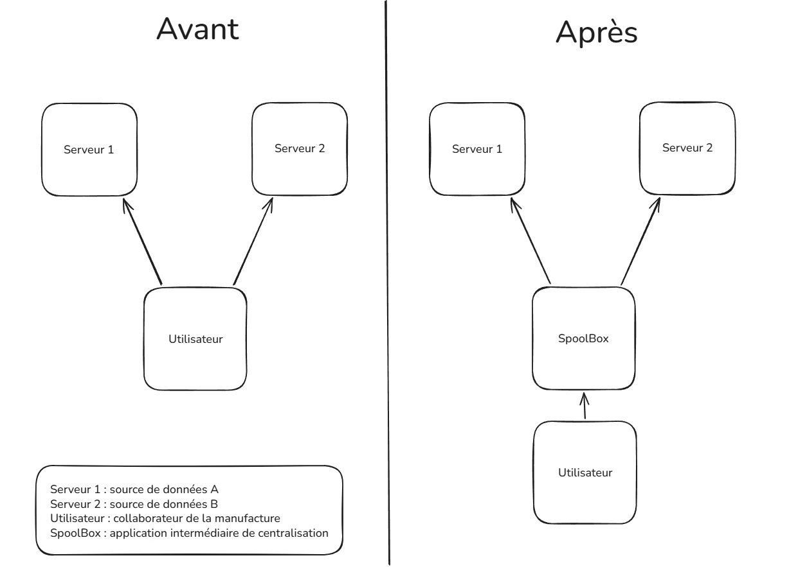
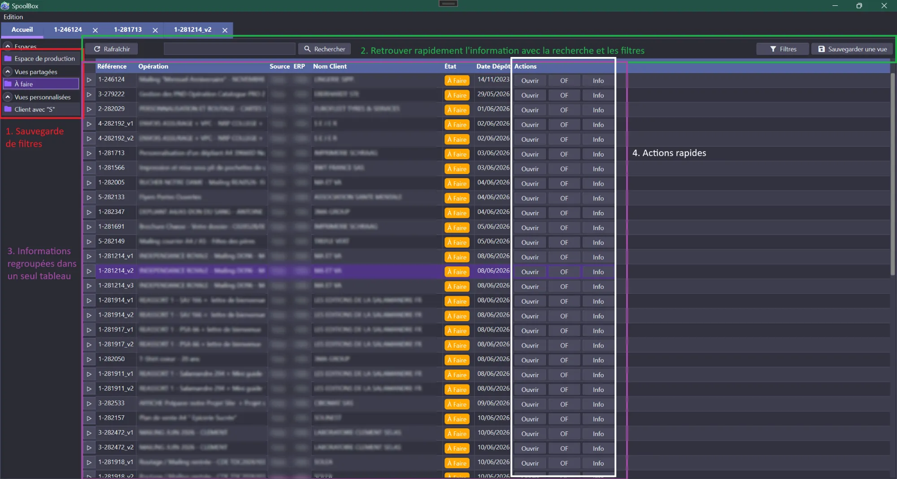
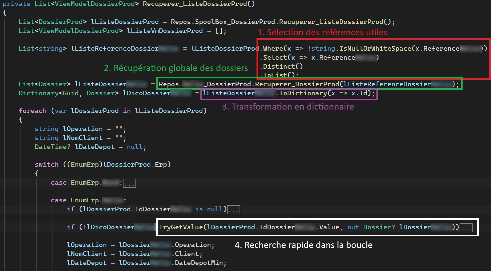

SpoolBox – le portail des fichiers de production
SpoolBox est une application de bureau qui donne aux opérateurs de l'atelier un accès unique aux fichiers d'impression et aux informations dont ils ont besoin pour produire. Elle remplace des recherches dans plusieurs dossiers et des transmissions manuelles par un seul écran, fiable et à jour. Je la développe depuis février 2026 ; elle est utilisée en production depuis l'été 2026.
- Cadre
- Alternance chez 3ma group, équipe Desktop
- Dates
- Depuis février 2026 – en production depuis juillet 2026, évolutions en cours
- Équipe
- Je suis le développeur de l'application. Mon maître d'alternance en est le Product Owner, et les autres développeurs de l'équipe relisent mon code.
- Technologies
- C#, WPF, .NET 10, .NET Framework 4.8, API web, SQL Server, Azure DevOps, Git
- Lien
- Application interne à l'entreprise : le code et l'application ne sont pas publics.
Le problème de départ
Dans l'atelier, les opérateurs travaillent à partir de « spools » : les fichiers, souvent en PDF, prêts à être imprimés. Ces fichiers étaient dispersés entre plusieurs emplacements, et une partie des informations arrivait par des fiches papier ou des messages du service planning.
Conséquences : du temps perdu à chercher le bon fichier, un risque d'utiliser une version obsolète, et un service planning occupé à des transmissions à faible valeur ajoutée.

Ce que fait l'application
- Liste des dossiers de production, alimentée automatiquement par les traitements d'export et rafraîchie à intervalle régulier.
- Recherche, tri et filtres (client, opération, état, machine…), avec des vues enregistrées personnelles ou partagées, et le choix des colonnes affichées pour chaque utilisateur.
- Explorateur de fichiers intégré : chaque fichier du dossier affiche son état, et l'opérateur peut l'ouvrir ou le copier sans quitter l'application.
- Fiche de travail (ordre de fabrication) générée en PDF et ouverte en un clic, avec ses informations clés (format, papier, grammage, parcours dans les ateliers).
- Impression groupée : on sélectionne plusieurs dossiers et l'application imprime les bons documents, selon des règles configurables.
- États du dossier (à faire, en cours, en attente, terminé), modifiables directement depuis la liste, sur un ou plusieurs dossiers, avec un historique des actions.
- Traitement automatique chaque nuit : archivage des dossiers terminés ou inactifs et synchronisation des états avec l'ERP de production.

Mon rôle
- Développement de l'application, de l'interface WPF à la base de données, en passant par l'API et le traitement de nuit.
- Recueil des retours utilisateurs : je vais voir les équipes de l'atelier, celle du matin et celle de l'après-midi, et je présente l'application aux nouveaux services qui l'adoptent.
- Organisation du travail en sprints : découpage en tâches, estimation en planning poker, suivi dans Azure DevOps.
- Qualité : revues de code par Pull Request, cahier de tests de non-régression, documentation technique et manuel d'utilisation.
- Mises en production : préparation des bases de données, des versions et des étapes de déploiement.
Défis techniques et solutions
Passer d'un chargement de 15 secondes à moins d'une seconde
Le premier retour des utilisateurs a été clair : le chargement était trop long. L'application interrogeait l'ERP une fois par dossier, à l'intérieur d'une boucle. Plus il y avait de dossiers, plus c'était lent : l'écran mettait environ 15 secondes à s'afficher.
J'ai réorganisé le traitement : l'application rassemble d'abord toutes les références utiles, les récupère en une seule requête, puis les range dans un dictionnaire pour les retrouver instantanément pendant la boucle. Résultat : moins d'une seconde de chargement.

Générer les fiches de travail malgré une bibliothèque ancienne
Les fiches de travail en PDF sont produites par un moteur de composition qui ne fonctionne qu'avec l'ancien .NET Framework 4.8, en 32 bits, alors que SpoolBox est en .NET 10. Avec un collègue, nous avons mis en place une API web : SpoolBox lui demande une fiche, l'API lance un petit programme séparé qui génère le PDF, avec un délai maximal. J'ai ensuite ajouté un écran de chargement et le nettoyage automatique des anciens PDF. J'en parle plus en détail dans ma veille sur .NET.
Imprimer les bons documents, sans les coder en dur
Selon le client, il faut imprimer la fiche de suivi, certains rapports, parfois tout en double… et ces cas changent souvent. Plutôt que d'écrire chaque cas dans le code, j'ai mis en place des règles stockées en base de données (imprimer les fichiers du dossier, les rapports de production, en double…) que l'on active et règle sans redéployer l'application. La fenêtre d'impression indique pour chaque fichier quelle règle l'a ajouté.
Apprendre d'une mise en production ratée
Ma première mise en production s'est mal passée : j'ai mélangé les environnements de développement, de recette et de production, et publié de mauvaises versions. Depuis, je rédige pour chaque mise en production une liste d'étapes écrite à l'avance (base de données, versions, configuration, tests à faire après la mise à jour), que je valide d'abord en préproduction.
Avec le recul : ce que je ferais autrement
- Écrire des tests automatisés dès le départ. Aujourd'hui, la non-régression repose surtout sur un cahier de tests manuels, et certaines parties du code n'ont aucun test unitaire. Chaque évolution demande donc de tout revérifier à la main. Je mettrais en place les tests en même temps que les premières fonctionnalités, quand c'est encore peu coûteux.
- Automatiser les mises en production. Ma mise en production ratée venait d'étapes manuelles enchaînées dans le mauvais ordre. Une liste écrite limite le risque, mais un pipeline de déploiement dans Azure DevOps, avec une configuration distincte par environnement, le supprimerait.
- Mesurer les performances avec des volumes réels. Le problème des 15 secondes n'est apparu qu'avec les premiers utilisateurs. J'aurais dû tester très tôt avec autant de dossiers qu'en production, et réfléchir dès la conception au cycle de vie des données : un dossier archivé n'a plus besoin d'être relu à chaque démarrage.
- Faire tester l'application à l'atelier plus tôt. Les premiers vrais retours des opérateurs sont arrivés après plusieurs mois de développement, et ont fait apparaître des besoins importants que nous n'avions pas prévus (un état « en cours », un filtre par machine). Un prototype montré dès les premières semaines les aurait fait ressortir plus tôt.
- Étendre un composant partagé plutôt que le copier. J'ai modifié une copie de l'explorateur de fichiers du framework de l'entreprise : elle ne profite plus de ses mises à jour. Je chercherais d'abord à ajouter des points d'extension au composant commun.
Ce que ce projet m'a appris
- Partir d'un besoin métier réel : une semaine passée à l'atelier pendant une période de forte activité m'a fait comprendre le travail des opérateurs mieux que n'importe quelle spécification.
- Penser performance dès qu'on touche aux données : un code juste peut rester inutilisable s'il est lent.
- Prendre en charge une application de bout en bout : développement, tests, documentation, déploiement et suivi des retours.
- Écrire un code relisible par l'équipe : certaines revues de code m'ont demandé plusieurs dizaines de corrections, et c'est ce qui m'a le plus fait progresser.
Évolutions en cours
- Suivi des étapes par atelier : chaque service validera sa propre étape sur un dossier, au lieu d'un seul état pour tout le dossier.
- Intégrer de nouvelles sources de dossiers et réduire encore les temps de chargement.
- À terme, faire de SpoolBox le seul support qui indique à l'atelier qu'un travail est prêt à produire, et remplacer les fiches papier.